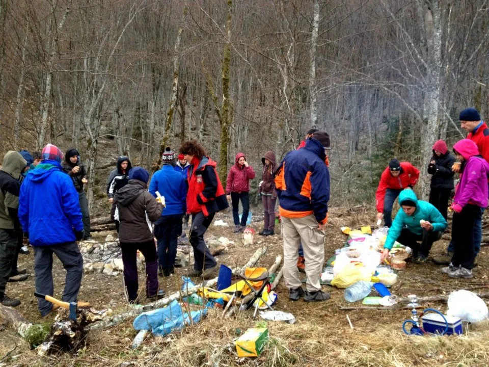

2011.-2020.
Četvrto desetljeće zagrebačke speleološke škole nastavilo je sa stvaranjem novih speleoloških pripravnika. Tih godina održali smo i dvije škole mimo naših tradicionalnih. Od ostalih stvari pamtit ćemo i odgađanje…

41. Zagrebačka speleološka škola
16.3.-20.4.2011.
Voditelj: MATIJA ČEPELAK
Polaznici (16, završilo 16):
Jasmina Kadija, Nikolina Dukić, Robert Pavičić, Zvonimir Vrbanec, Katja Crevar, Martina Radošević, Tomislav Hlupić, Josip Mustapić, Denis Karzić, Luka Pavlović, Matija Marohnić, Karlo Ivan Brezović, Toni Draženović, Janko Marohnić, Darija Josić i Mikula Jajac
Instruktori: Matija Čepelak, Marta Malenica, Dalibor Paar, Luka Mudronja, Tea Selaković, Jasna Železnjak, Ronald Železnjak, Ana Bakšić, Marko Rakovac, Vedran Ferenčak, Marko Masnec, Đuro Kužumilović, Darija Šarić, Marin Mustapić,
Anja Žmegač, Čedo Josipović, Ivica Ćukušić, Dina Kovač, …
42. Zagrebačka speleološka škola
7.3.-22.4.2012.
Voditeljica: TEA SELAKOVIĆ
Polaznici (21, završilo 20):
Zoran Bulić, Anita Trojanović, Edo Vrčić, Frane Rogić, Vinka Dubovečak, Tanja Šinko, Ivan Nakić, Vida Zrnčić, Alan Turk, Hrvoje Ćustić, Rajna Malinar, Davor Baran, Nikolina Kuharić, Dino Grozić, Hrvoje Eklić, Natalija Habulin, Iva Stojević, Andrija Perušić, Nikolina Bencetić i Nenad Suvajac
Instruktori: Tea Selaković, Ana Bakšić, Anja Žmegač, Zvonimir Vrbanac, Marko Masnec, Marijan Sutlović, Valentina Lipovec, Ivica Ćukušić, Filip Filipović, Dalibor Paar, Bernarda Paar, Dean Bratušek, Marinko Malenica, Ronald Železnjak, Jasna Železnjak, Darija Šarić, Marin Mustapić, Damir Lacković, Marko Rakovac, Filip Filipović,
43. Zagrebačka speleološka škola
7.4.-5.5.2013.
Voditeljica: ANJA ŽMEGAČ
Polaznika (16, završilo 16):
Tibor Bali, Mislav Barić, Emanuelle Govedarica, Luka Havliček, Iva Hollos, Marija Ivandekić, Davorin Jašinski, Saša Jovanović, Katarina Koller, Vanja Milas, Mario Moslavac, Davide Mulas, Frano Pavić, Tatjana Petric, Davor Šarić i Martina Šobak
Instruktori: Anja Žmegač, Vinka Dubovečak, Ana Bakšić, Tea Selaković, Edo Vričić, Dalibor Paar, Valentina Lipovec, Ivica Ćukušić, Zvonimir Vrbanec, Marko Rakovac, Marta Malenica, Matija Čepelak, Tamara Čuković, Marinko Malenica, Rajna Malinar, Vedran Ferenščak, Nenad Suvajac, Marin Mustapić, Darija Šarić, Jagoda Munić, Andrija Perušić, Čedo Josipović, Dina Kovač, Marko Masnec, Damir Lacković, Dean Bratušek, Marijan Sutlović, Tanja Šinko, Vida Zrnčić i Ivan Limić, Tin Josipović
44. Zagrebačka speleološka škola
11.3.-22.4.2014.
Voditeljica: VALENTINA ĆUKUŠIĆ
Polaznici (31, završilo 27):
Stjepan Dubac, Damir Ivanković, Renata Rogić, Darko Matešić, Matea Prijevac, Ivo Kušek, Anđela Perković, Alma Pezerović,
Julijan Kovač, Jure Skelin, Barbara Burčul, Ana Dobrović, Matea Kalčiček, Lana Kekelj, Danko Nakić, Eva Jurković, Matea Despot, Tomo Ferega, Monika Orlić, Matea Bošnjak, Kristijan Cindrić, Goran Kuzmac, Maja Medak, Ivan Idžojtić, Marko Ličko, Barbara Bertović, Ines Martinko, (odustalo 4: Maroje Marohnić, Saša Balent, Nikolina Buljan, Sonja Crnković)
Instruktori: Valentina Ćukušić, Vinka Dubovečak, Ana Bakšić, Tea Selaković, Edo Vričić, Dalibor Paar, Ivica Ćukušić, Zvonimir Vrbanac, Marko Rakovac, Tamara Čuković, Marinko Malenica, Rajna Malinar, Vedran Ferenščak, Nenad Suvajac, Marin Mustapić, Darija Šarić, Jagoda Munić, Andrija Perušić, Čedo Josipović, Dina Kovač, Marko Masnec, Damir Lacković, Dean Bratušek, Tanja Šinko, Vida Zrnčić, Ivan Limić, Tibor Bali, Mario Moslavac, Vladimir Matek, Luka Havliček, Marijan Sutlović i Filip Filipović
45. Zagrebačka speleološka škola
11.3.-22.4.2015.
Voditelj: MARIN MUSTAPIĆ
Polaznici (23, završilo 20):
Biljana Filipović, Darko Španja, Ivor Janković, Antonela Barbir, Valentina Plemenčić, Sabina Plemenčić, Krešimir Plamančić, Daniel Greblički, Jelena Zovko, Bruno Benger, Silvija Perak, Filip Škarić, Marta Bošnjaković, Ivana Mišerić, Luana Lojić, Ivan Morvaj, Vesna Meštrović, Mario Mustapić, Nikolina Buljan i Mirna Poljičak
Instruktori: Marin Mustapić, Darija Šarić Mustapić, Ana Bakšić, Ivica Ćukušić, Valentina Ćukušić, Filip Filipović, Marko Rakovac, Andrija Perušić, Luka Havliček, Marijan Sutlović, Marjan Prpić, Beata Prpić, Tea Selaković, Edo Vričić, Čedo Josipović, Dalibor Paar, Damir Lacković, Katarina Koller, Davor Šarić, Stjepan Dubac, Tibor Bali, Tanja Šinko, Nenad Suvajac, Loris Redovniković, Dean Bratušek, Vinka Dubovečak, Vlado Matek, Vedran Ferenščak, Ivo Frangeš, Slaven Boban i Marko Ličko
46. Zagrebačka speleološka škola
30.3.-4.5.2016.
Voditelj: ANDRIJA PERUŠIĆ
Polaznici (24, završilo 24):
Domagoj Čajko, Katarina Petričević, Hrvoje Petričević, Nikola Babić, Gordan Bezjak, Antonio Sabljak, Luka Žuljević, Luka Suvaković, Anita Bilandžoć, Iva Žulić, Tea Šimić, Anja Černeka, Darko Jeras, Juraj Kucelj, Antonio Burić, Marina Grandić, Ela Kovač, Mak Martinović, Goran Radunović, Marija Petrović, Lucija Dujmović, Iva Radočaj, Aleksandar Grilec i Bojana Burnač
Instruktori: Andrija Perušić, Marin Mustapić, Darija Šarić Mustapić, Tanja Šinko, Ana Bakšić, Anja Žmegač, Ivor Janković, Antonela Barbir, Luana Lojić, Matea Olujić, Valentina Plemenčić, Pava Vidić, Luka Havliček, Darko Španja, Tibor Bali, Mario Moslavac, Marko Rakovac, Katarina Koller, Matija Čepelak, Nenad Suvajac, Edo Vričić, Tea Selaković, Marijan Sutlović, Dalibor Paar, Marko Ličko, Nikolina Buljan, Ivo Frangeš, Vesna Meštrović, Zvonimir Vrbanac, Filip Filipović, Ivica Ćukušić, Darko Bakšić, Damir Lacković, Ljiljana Josipović, Savor Šarić, Čedo Josipović, Jelena Zovko, Danijel Greblički i Mario Mustapić
47. Zagrebačka speleološka škola
29.3.-7.5.2017.
Voditelj: LUKA HAVLIČEK
Polaznici (20, završilo 20):
Ana Lipovac, Iva Tara Drmić, Dora Zorica Mikecin,Lucija Kauf, Gabriela Alfier, Marina Morić, Bruno Ačkar, Ivan Bašić Grgić, Neven Prišuta, Marko Čulinović, Ognjen Cividini, Igor Dodolović, Tin Takač, Petar Božićević, Lovro Kizman, Tomislav Tomašković, Dragan Skorosavljević, Mario Kovačević, Niko Jakovčev i Luka Blažić
Instruktori speleolozi: Luka Havliček, Ana Bakšić, Čedo Josipović, Dalibor Paar , Ivica Ćukušić, Damir Lacković, Tanja Šinko, Anja Žmegač, Tea Selaković, Darija Šarić Mustapić, Vinka Dubovečak, Ljiljana Josipović Novosel, Marko Rakovac, Andrija Perušić, Marijan Sutlović, Edo Vričić, Vedran Ferenčak, Marin Mustapić, Marjan Prpić, Tibor Bali, Damir Janton (SKOL),
Pripravnici i pomagači: Ela Kovač, Antonela Barbir, Katarina Koller Šarić, Lucija Dujmović, Marija Petrović,Marina Grandić, Tatjana Petric, Valentina Plemenčić, Mateja Olujić, Pava Vidić, Jelena Zovko, Luana Lojić, Darko Španja, Ivor Janković, Darko Jeras, Domagoj Čajko, Ivo Frangeš, Stjepan Dubac, Marko Ličko, Hrvoje Petričević, Mak Martinović, Daniel Greblički i Gordan Bezjak
48. Zagrebačka speleološka škola
7.3.-8.4.2018.
Voditelj: MARIJAN SUTLOVIĆ
Polaznici (20, završilo 17):
Boris Bakarić, Andrija Ćeškić, Mia Felić, Emina Horvat Velić, Dorja Horvatić, Luka Ivančić, Tomislav Kovačević, Marin Mašina, Lucija Mihaljević, Anika Novak, Filip Pacak, Gorana Perić, Mia Šepčević, Stipe Vicković, Ana Vidić, Vito Danevski, Lucija Mandekić (troje nije završilo: Mabel Lozančić, Hrvoje Mucavac, Irena Kundur)
Instruktori: Marijan Sutlović, Tea Selaković, Ana Bakšić, Ana Lipovac, Niko Jakovčev, Valentina Plemenčić, Domagoj Čajko, Tibor Bali, Marko Rakovac, Vedran Ferenčak, Darko Španja, Marina Grandić, Darko Jeras, Marko Ličko, Pava Vidić, Dalibor Paar, Marjan Prpić, Andrija Perušić, Luka Havliček, Mak Sedmak, Ivor Janković, Antonela Barbir, Lucija Kauf, Edo Vričić, Marin Mustapić, Čedo Josipović, Matea Talaja, Nikolina Kos, Tanja Šinko, Bruno Ačkar, Ivan Ban, Anja Žmegač, Igor Dodolović, Gabrijela Alfier, Filip Škarić, Gordan Bezjak, Loris Redovniković, Neven Prišuta
49. Zagrebačka speleološka škola
27.3.-8.5.2019.
Voditeljica: VALENTINA PLEMENČIĆ
Polaznici (25, završilo 25):
Maja Marinić, Marin Farac, Dejan Čabrajić, Dorja Cug, Dora Perinčić, David Rafael Lipovac, Helena Polšek, Katarina Azinović, Ena Tadej, Jan Šteter, Juraj Peršić, Vedran Radonić, Donateo Sitarić-Knezić, Romano Rast, Hrvoje Mihalinec, Igor Ivanković, Darija Galinec, Tin Novosel, Josip Diklić, Gorana Sačer, Jonathan James Gabris, Jennifer Marla Toyne, Mirka Šafarić-Vučko, Sanda Škrbina, Mirisa Tokić.
Instruktori: Valentina Plemenčić, Luka Havliček, Darko Španja, Tibor Bali, Marko Rakovac, Katarina Koller-Šarić, Matija Čepelak, Ana Bakšić, Ivor Janković, Antonela Barbir, Pava Vidić, Edo Vričić, Tea Selaković, Marijan Sutlović, Dalibor Paar, Marko Ličko, Ivica Ćukušić, Ljiljana Josipović, Čedo Josipović, Darko Jeras, Gordan Bezjak, Ana Vidić, Domagoj Čajko, Mak Sedmak, Marin Mustapić, Daniel Lacko, Loris Redovniković, Damjan Belavić, Igor Dodolović, Dorja Horvatić, Mia Šepčević, Filip Pacak, Marjan Prpić, Lucija Kauf, Marin Mašina, Marina Grandić, Ela Kovač, Vedran Ferenčak, Ana Lipovac, Srđana Rožić, Tatjana Vujnović, Tomislav Tomašković, Andrija Češkić, Lucija Mihaljević, Filip Škarić
50. zagrebačka speleološka škola
23.9.-4.11.2020.
Voditelj: VEDRAN FERENČAK
Polaznici (18, završilo 16):
Taida Galić, Ivana Fundurulić, Ida Vašarević, Karmen Jakovina, Barbara Domitrović, Petra Mlinarek, Josipa Humski, Pavao Puljić, Lukas Grbac Lacković, Admir Hasanović, Antun Jakopec, Marina Radić, Marijan Capan, Matej Muža, Matija Ostojić Benički, Igor Kutil, Tamara Špičko, Davorin Turković
Instruktori: Vedran Ferenčak, Valentina Plemenčić, Marko Rakovac, Dalibor Paar, Čedo Josipović, Edo Vričić, Marin Mustapić, Darija Mustapić, Ana Bakšić, Marijan Sutlović, Tibor Bali, Tea Selaković, Marina Grandić, Damir Lacković, Darko Jeras, Pava Vidić, Ana Vidić, Mak Sedmak, Ela Kovač, Marko Ličko, Domagoj Čajko, Tanja Vujnović, Ela Kovač, Dejan Blažinović, Katarina Azinović, Ivor Janković, Igor Dodolović, Maja Marinić, Luka Ivančić, Danijel Lacko, Ana Lipovac, …
-----------------------------------------------------------------------------------------------------------------------------------
U organizaciji Speleološkog odsjeka PDS Velebit u vremenu od 3-7. listopada 2020. održana je i
Prva sinjska speleološka škola.
Voditeljica škole: ANA BAKŠIĆ
Sedam ih je uspješno položilo ispit i steklo naziv speleologa pripravnika: Luka Čulina, Sanda Doljanin, Mirko Gaurina, Stipe Gulić, Renato Malora, Stipe Pavić i Toni Jurić Šolto.
Predavači i instruktori: Ana Bakšić, Tea Selaković, Luka Ivančić, Gorana Perić, Pava Vidić, Ana Vidić, Danijel Lacko, Luka Havliček (SOV), Hrvoje Šarić, dr Andrija Munivrana, Joža Habijan (SS Sv J i HGSS ST), Teo Barišić (SO Sv. M), Marin Glušević (SOM), Zvonimir Cigić (HGSS ŠI).
U ovoj godini održana je i Škola speleologije za učenike Drvodjeljske škole iz Zagreba, a u sklopu projekta "Modernizacija strukovnih programa u Drvodjeljskoj školi Zagreb", voditelj je bio Marijan Sutlović
42. zagrebačka speleološka škola 43. zagrebačka speleološka škola 44. zagrebačka speleološka škola 45. zagrebačka speleološka škola 46. zagrebačka speleološka škola 47. zagrebačka speleološka škola 48. ZSŠ na Gorskom Zrcalu 49. zagrebačka speleološka škola 50. zagrebačka speleološka škola
Galerija 42. škole
Galerija 43. škole
Galerija 44. škole
Galerija 45. škole
Galerija 46. škole
Galerija 47. škole
Galerija 48. škole
Galerija 49. škole
Galerija 50. škole